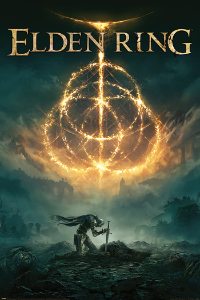
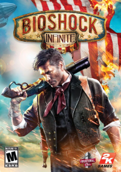
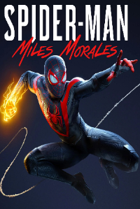

Elden Ring - ⭐⭐⭐⭐⭐

Com o anúncio da DLC deu vontade de jogar denovo, tem nem oq dizer muito.
O jogo era incrível quando lançou e é incrivel até hoje, o único ponto negativo pra mim continua sendo o final do jogo que em comparação ao resto fica um pouco aquém,
mas tá ligado. DLC vindo ai eu atualizo aqui
Bioshock Infinite - ⭐⭐⭐⭐⭐

A gameplay do jogo é muito boa, os poderes em sua maioria são muito úteis, cada um em uma situação específica e as armas são ótimas de atirar.
Os inimigos são bem genéricos, porém cumprem o proposito da gameplay e em geral o jogo não é muito difícil.
Em relação aos gráficos, eu achei eles muito bonitos, como o estilo segue mais uma pegada cartoon, da pra sentir que o jogo envelheceu muito bem,
mal dá pra notar que originalmente ele foi lançado pra Xbox360 e o PS3, os personagens são muito bem feitos,
com destaque pra Elizabeth que possui animações muito flúidas e expressões faciais impressionantes, ela parece uma personagem da Disney de tão bem feita.
Dito isso, pra mim o que se destaca nesse jogo é a criatividade, tanto nos cenários que te levam a uma cidade literalmente no céu,
quanto aos personagens que tem um charme único, cada um com sua personalidade e, não menos importante, para a história que no começo não parece ser grandes coisas,
mas que ao decorrer do jogo prende a sua atenção e no final te deixa de queixo caído com os acontecimentos. É muito interessante como a história é contada aqui,
deixando várias pistas que passam despercebídas pelo jogador que contam e/ou explicam detalhes que irão ocorrer mais pra frente no jogo. Definitivamente vale a experiência,
já que o jogo é bastante curto, acho que todos deveriam dar uma chance e jogar pelo menos uma vez.
Baldur's Gate 3 - ⭐⭐⭐⭐⭐
Não há outra palavra para descrever esta obra de arte senão brilhante. Este jogo é brilhante em tudo que se propõe a fazer.
Como jogador de RPG de mesa (principalmente de D&D), é brilhante ver como eles conseguiram portar todo o sistema para um videogame - claro, com algumas alterações - e transportar também a sensação de liberdade que esse estilo de jogo te dá. É impressionante a forma como as mais absurdas possibilidades de contornar algum problema funcionam de forma natural aqui; você pode fazer algo como o jogo "esperaria" que você fizesse, ou pode contornar e fazer de outra forma completamente diferente. É muito legal a sensação quando um jogo respeita a sua inteligência como jogador e te permite jogar do seu jeito, não te prendendo apenas à forma que foi pensada como a "certa", e é mais impressionante ainda saber que os sistemas do jogo são tão bem feitos que eles não só comportam o que você tentou fazer, mas funcionam de maneira tão orgânica que parece que tudo foi pensado de antemão.
Outro ponto forte do jogo é sua história, que sinceramente no começo não me pegou de primeira, já que os problemas são introduzidos muito rapidamente e há uma sensação de urgência muito grande, o que para mim, pelo menos, me deixava angustiado de fazer missões secundárias ou explorar mais o mapa. Porém, passando dessa primeira impressão negativa, a história e principalmente os personagens são, novamente, brilhantes. Cada personagem que integra o seu grupo parece vivo; eles não são apenas personagens unidimensionais ou arquétipos simples, eles são complexos, possuem suas nuances. Um personagem que à primeira vista parece ser maldoso esconde um lado doce e gentil dentro de si, ou outros que parecem ser amigáveis e bondosos escondem egoísmo e ganância em seu ser. Essa complexidade deixa a história do jogo muito interessante, já que você se importa com eles e quer descobrir cada vez mais daquele mundo, seja para ajudar alguém que você goste ou para entender o porquê de alguém ser daquele jeito.
Voltando para a trama em si, ela é excepcional; cada elemento inserido no roteiro terá sua importância em algum momento, até mesmo missões secundárias que você nem presta atenção direito, elas são ou serão amarradas em algum ponto ao plot principal. Isso demonstra um talento inacreditável dos roteiristas da Larian, que conseguem fazer uma história tão grande, tão complexa e, mesmo assim, tão coesa. Olha, eu tive essa impressão na minha primeira jogada, seguindo apenas um caminho; imagine o quanto de ramificação que toda a história tem para comportar as escolhas do jogador...
Para não dizer que só teve elogios, o jogo tem sim alguns pontos negativos. Porém, eles estão mais relacionados a pequenos detalhes de qualidade de vida e desempenho e podem ser facilmente corrigidos. Um ponto que me irritava muito é o sistema de autosave do jogo, ele não salva direito. Muitas vezes já me vi em situações em que o último salvamento automático tinha sido feito há 40 minutos antes do ponto em que eu estava, e ao precisar voltar eu perdia todo aquele progresso. Sendo assim, criei um trauma e em qualquer situação apertava o F5 para salvar manualmente. Outro ponto negativo é em relação ao desempenho do jogo, como eu disse anteriormente, BG3 é um jogo muito complexo, porém, não justifica o tamanho do jogo e principalmente o uso do hardware. Em vários momentos, senti o jogo engasgando e lutando para funcionar, principalmente em momentos de combates com muitos inimigos, onde às vezes o jogo congela por uns 30 segundos até realizar a próxima ação, além disso, eu acho o tempo de loading muito demorado. Mesmo com um SSD NVME, os loadings demoram cerca de 15 a 30 segundos.
Por fim, considero Baldur's Gate 3 um dos melhores jogos de todos os tempos. Se você gosta do gênero de RPG, mesmo não gostando de jogos de turno, eu humildemente aconselharia a dar uma chance. O jogo é muito divertido, tem muito conteúdo e o fator de rejogabilidade dele é muito grande, já que você tem diversas classes para jogar e a história é muito ampla, podendo assim tomar diversos caminhos diferentes.
Death Stranding - ⭐⭐⭐⭐⭐

Sem palavras pra descrever, uma das experiências mais diferentes que já tive num videogame.
História muito linda e muito foda. A gameplay pode afastar a maioria, mas ao longo da jogatina você vai aprendendo a gostar,
no começo é meio repetitivo, mas as mecanicas vão ficando um pouco mais complexas e a gameplay começa a ter suas nuances.
Um ponto que eu quero destacar é que jogar isso é muito relaxante, a mistura da gameplay com a trilha sonora cria uma imersão muito grande,
fazendo com que andar quilometros por ai se preocupando com o seu peso,
seu equilibrio e com a qualidade dos produtos que você tá entregando seja uma experiência até que agradável.
Outro ponto forte é o universo e a lore criada, toda a ideia da praia e dos laços e de como a morte é essêncial para a vida,
compoem junto a narrativa uma história muito bonita, e intrigante, cheia de descobertas e reviravoltas.
As entidades da praia são inimigos assustadores no começo, e a estranhesa que eles trazem no jogo é algo muito positivo,
porém ao avançar na jornada, eles param de ser tão problemáticos dando lugar aos inimigos humanos, que são muito chatos,
porém os encontros com eles são bem reduzidos então não chega a irritar muito. No fim, eu poderia continuar escrevendo linhas e linhas,
porém no final eu quero só enfatizar que jogar isso foi uma experiência muito doida, na qual eu gostei muito e me fez entender um pouco da admiração pelo Kojima,
realmente o cara é gênio. Criar uma história dessa e ter a coragem de fazer um jogo sobre literalmente andar não é pra qualquer um.
Spiderman: Miles Morales - ⭐⭐⭐

Assim, como um jogo em si, Spiderman: Miles Morales não faz feio.
Ele é muito divertido, a movimentação é muito boa e combate é bem satisfatório.
A liberdade que você tem pra se movimentar por Manhattan é um negócio muito foda,
você realmente se sente como o homem aranha se balançando pelos prédios, a movimentação é bastante fluída e as animações são muito bonitas,
pra mim esse é fácil o ponto mais forte desse jogo, eu poderia ficar horas só andando pelo mapa que não me cansaria,
é um sentimento parecido com andar de carro no GTA. O combate é bem satisfatório, apesar dele ser fácil,
as animações são boas e os poderes do Miles dão uma maior gama de ataques que você pode usar contra os inimigos, te possibilitando de fazer vários combos,
que juntando com o fato das animações serem muito caprichadas faz com que o combate seja bem cinematográfico.
Apesar disso, pra mim esse jogo peca muito na questão história.
A campanha é muito curta e a história é muito sem graça, muito previsivel e muito monótona.
Sério, fora o Miles que é um personagem até que decente nesse jogo ninguém se salva, o amigo dele lá é um pateta que só faz concordar com o Miles,
a amiga dele é muito chata com o esteriótipo de jovem dinâmica desconstruída que, olha só, só faz merda e não escuta ninguém.
Além disso, a história não tem peso nenhum, ela é mal contada e muito infantil.
Eu sei que esse jogo é praticamente uma dlc do primeiro jogo, mas porra esse jogo é vendido por 200 conto, é de se esperar no mínimo uma história boa,
eu nem vou entrar no mérito dela ser pequena, mas isso também é um defeito foda. Enfim, o jogo é bom, mas eu não acho que ele valha o preço,
numa promoção por uns 100 conto vale a pena, mas qualquer valor maior que isso é rasgar dinheiro.